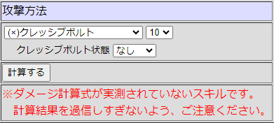
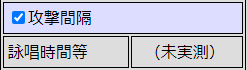

スキル情報提供のお願い
計算機に実装されていないスキルの補完を目指して各種データ収集を開始していますが
必要なデータが多岐に渡るため気長な作業になりそうです
もしご協力いただける方がいればぜひ Googleフォーム から情報をお寄せください
現在、大勢の方にご協力頂いています
ありがとうございます
■ 必要な情報
主に３種類の情報を必要としています
どの情報を頂けても助かります
１．計算機に追加されていない拡張４次職の攻撃スキルのダメージ実測値
２．計算機に「ダメージ計算式が実測されていない」と記されている攻撃スキルのダメージ実測値
例

３．計算機に「詠唱時間等が未実測」と記されている攻撃スキルのスキルLv毎の変動詠唱、固定詠唱、ディレイ実測値
例

■ 攻撃スキルのダメージを採取する場合
準備
1. 基本的にはシャドウを外して裸に武器だけを持った状態でお試しください
素手だと計算が合わない事があるので何か武器を持ってください
2. まず２～３回攻撃してダメージにブレ幅が無い事を確認してください
ダメージがブレる場合はAtk/Matkの低い武器に変更して再確認してください
ダメージを収束させるために必要なDexが高すぎる場合は補正装備を付ける必要があります
その場合はお手数ですが補正装備の情報も合わせてお知らせください
3. BaseLv、JobLv、基礎ステータス、特性ステータス、装備している武器（矢・弾丸を含む）などをメモしてください
メモのテンプレート を用意しましたので宜しければご自分のGoogleドライブにコピーして
ご自分が使いやすいように項目を追加してご利用ください
メモのテンプレートには用意されていないスキルを採取する場合は
適当なシートをコピーして新しいスキルのシートを作成してください
4. スキルの説明欄を読んでスキル威力に影響する要素をメモしてください
スキル威力に影響するパッシブスキルを習得している場合はその状態をメモしてください
スキル威力に影響するバフがかかっている場合はその状態をメモしてください
その他にもスキル威力に影響する要素があればメモしてください
計測
5. 計算機に実装されているモンスターを相手にスキルを打ってください
6. 使ったスキルとスキルLvをメモしてください
7. ダメージをメモしてください
クリティカルが出るスキルの場合は通常ダメージとクリティカルダメージのどちらが出たか確認してください
多段ヒットするスキルの場合は何ヒット分のダメージなのか確認してください
提出
8. メモした情報をまとめて Googleフォーム に投稿してください
もしご自分のGoogleドライブにメモのテンプレートをコピーして作業されている場合は
読み取り専用のURLを共有していただくのが早いと思いますのでご検討ください
■ 詠唱等のデータを採取する場合
変動詠唱、固定詠唱、ディレイを採取する場合は動画などを撮らないと難しいかもしれません
もしご協力頂ける場合はメモのテンプレートの中の「詠唱など」のシートをご利用ください